POSTUPAK · RADNI LIST V12 · FLUIDSIM
Postupak V12 · vježbe V31, V32, V33 i V38 · 8 sati
Postupak V12 — upravljanje hidrauličkim cilindrima u FluidSIM-H
Cijeli radni list V12 korak po korak u FluidSIM-H: podizni stol s jednoradnim cilindrom, stezač s dvoradnim cilindrom i razvodnikom 4/2, držanje tereta deblokirajućim nepovratnim ventilom i razvodnikom 4/3 te elektrohidraulički stezač s tlačnom sklopkom. Uz svaki korak su snimke zaslona, simulirane vrijednosti i potpuna rješenja.
- nacrtati i simulirati krugove jednoradnog i dvoradnog cilindra s ručnim razvodnicima
- očitati tlakove u vodovima cilindra i usporediti vremena hoda s proračunom
- pokazati zašto teret pada bez deblokirajućeg ventila i kako ga 1V2 drži
- spojiti elektrohidraulički krug sa samodržanjem i tlačnom sklopkom
- razlikovati što simulacija pokazuje, a što se mjeri samo na stolu
O postupku
Ova stranica je postupak za radni list V12: sve što se radi na računalu, od nove sheme do predaje, redom kojim je zadano. Tekst zadatka, sheme, pitanja i rješenja isti su kao na stranicama vježbi V31 Hidrauličko upravljanje jednoradnim cilindrom i V32 Upravljanje dvoradnim cilindrom razvodnikom 4/2 i V33 Deblokirajući nepovratni ventil i razvodnik 4/3 i V38 Tlačna sklopka; ovdje su dopunjeni koracima u FluidSIM-u i rezultatima simulacije.
Rješenja su skrivena ispod svakog pitanja. Najprije riješite sami, a onda otvorite Prikaži rješenje i usporedite.
Gotove sheme (rješenja) za FluidSIM
- PIH_V31_rjesenje_v01.ct — V31: podizni stol, jednoradni cilindar Ø25, 1,0 kN, ručni razvodnik 3/2
- PIH_V31_prigusno_spustanje_v01.ct — V31 dopuna: jednosmjerni prigušni ventil 7 % za polagano spuštanje
- PIH_V32_rjesenje_v01.ct — V32: dvoradni cilindar Ø25/16, ručni razvodnik 4/2, tri manometra
- PIH_V33_bez_1V2_v01.ct — V33 prvi dio: razvodnik 4/3 s optočnim srednjim položajem, bez deblokirajućeg ventila
- PIH_V33_rjesenje_v01.ct — V33: deblokirajući nepovratni ventil 1 : 4 u vodu A, X na vod B, prigušni ventil 50 %
- PIH_V38_rjesenje_v01.ct — V38: elektromagnetski razvodnik 4/2, samodržanje K1, tlačna sklopka B1 3,5 MPa, K2 i lampica H1
Datoteke se otvaraju u FluidSIM-H 4 (File → Open). Snimke zaslona napravljene su u FluidSIM-H 4.2 s engleskim sučeljem. Osnove rada u FluidSIM-u (nova shema, knjižnica, crtanje vodova, provjera, simulacija, dijagram put–korak) opisane su u Postupku V01, odjeljak 0.
0 · Prije početka
- File → New (Ctrl + N) otvara novu shemu; Window → Tile Vertically (Shift + F4) postavlja shemu i knjižnicu jednu uz drugu.
- Elemente povucite iz knjižnice na shemu i dvoklikom otvorite njihove dijaloge. Vod crtajte povlačenjem od priključka do priključka; povlačenjem na postojeći vod nastaje račvanje.
- Oznake (1A1, 1V1, 1S1, 0Z1 …) upisuju se elementom Text iz skupine Miscellaneous (uključite Frame Text).
- Execute → Check Superficially (F6) provjerava crtež; Start (F9), Pause (F8), Stop (F5).
- Ručno tipkalo aktivirate klikom mišem (dok držite tipku miša); Shift + klik zadrži ga pritisnutim. Ručica sa zasunom prebacuje se jednim klikom i ostaje u položaju.
- Granični ventil veže se uz cilindar oznakom: dvoklik na cilindar → kartica Actuating Labels → oznaka (npr. 1S2) i položaj na hodu (od–do u mm); ista oznaka upiše se dvoklikom na valjak graničnog ventila (Mechanical connection → Label).
- Dijagram put–korak: iz Miscellaneous povucite State Diagram i na njega povucite cilindre i ventile čije stanje želite pratiti.
FluidSIM-H
Sve četiri vježbe rade se u hidrauličkoj inačici programa. Tlak se prikazuje u MPa (1 MPa = 10 bar). Simulacija teče u stvarnom vremenu, pa ručicu razvodnika držite Shift + klikom i pratite manometre dok se cilindar giba.
Dio A · V31 Hidrauličko upravljanje jednoradnim cilindrom
Zadatak
U radionici za montažu reduktora radnik postavlja kućište na podizni stol i diže ga na visinu koja mu odgovara. Stol nosi jedan uspravni jednoradni (plunžerni) cilindar: ulje ga diže, a teret stola ga vraća dolje kad se vod cilindra spoji sa spremnikom. Stvarni stol ima plunžer promjera 50 mm i s teretom mase 400 kg traži tlak od oko 20 bar. Na didaktičkom stolu isti zadatak rješavamo u umanjenom mjerilu.
Na raspolaganju je jednoradni cilindar s klipom promjera 25 mm i hodom 100 mm, postavljen uspravno i opterećen silom od 1,0 kN (uteg ili opružni uređaj za opterećenje). Agregat daje stvarni protok od oko 2,0 l/min, a sigurnosni ventil namješten je na 50 bar. Cilindrom se upravlja ručnim razvodnikom 3/2 s povratnom oprugom: dok radnik drži ručicu, stol se diže; kad je pusti, stol se spušta.
Zadatak: nacrtajte shemu, spojite krug, izmjerite tlak i vrijeme dizanja, izmjerite vrijeme spuštanja i pokušajte zaustaviti stol u sredini hoda. Na kraju odgovorite na pitanja i predložite poboljšanje sheme.
Sigurnost pri radu
Pažnja
Hidraulički krug radi pod tlakom do 50 bar, a ulje pod tlakom može probiti kožu i kroz vrlo mali otvor. Crijeva i spojke spajajte i odspajajte samo kad je agregat isključen i tlak ispušten: isključite motor, pomaknite ručicu razvodnika nekoliko puta u oba položaja i provjerite da oba manometra pokazuju 0 bar. Nikad ne tražite mjesto propuštanja prstima — koristite komad kartona. Teret na stolu mora biti osiguran od pada, a ruke se ne stavljaju ispod ploče stola ni uz klipnjaču dok je agregat uključen.
Prije uključivanja provjerite da su sve brze spojke do kraja utaknute (povucite crijevo — ne smije izaći) i da crijeva nisu presavijena ni napeta. Proliveno ulje odmah obrišite: sklisko je, a u dodiru s kožom duže vrijeme može izazvati nadražaj. Ako ulje pod tlakom prodre pod kožu, ozljeda izvana izgleda bezazleno, ali traži hitnu liječničku pomoć. Nosite zaštitne naočale cijelo vrijeme rada na stolu.
Shema
U mirnom položaju razvodnika (kvadrat uz oprugu) vod cilindra A spojen je sa spremnikom, pa teret istiskuje ulje iz cilindra i stol se spušta. Priključak P je tada zatvoren i cijeli protok crpke prolazi kroz sigurnosni ventil pri tlaku njegova otvaranja. Kad se ručica pritisne, P se spaja s A i cilindar se izvlači. Tlak koji tada pokazuje 1Z1 određen je teretom, a ne namještenjem sigurnosnog ventila — tlak raste samo koliko je potrebno da se svlada opterećenje.
Vježba se radi u FluidSIM-u
Koraci postupka vježbe koji se odnose na spajanje na didaktičkoj ploči i mjerenje štopericom ili manometrom izvode se u simulaciji. Gdje simulacija ne može pokazati pojavu iz pokusa, to je napisano uz korak.
A1 · Shema podiznog stola u FluidSIM-H
- Nova shema u FluidSIM-H. Agregat: Pump unit (simplified representation), Operating Pressure 5 MPa (50 bar), Flow 2 l/min — sigurnosni ventil 0V1 ugrađen je u element.
- Razvodnik 1V1: Mechanically Operated → 3/2-way hand lever valve s povratnom oprugom; u mirnom položaju A→T, P zatvoren. T na spremnik (Tank).
- Cilindar 1A: Single acting cylinder. Configuration: Single acting (Extension) bez opruge, Sensing i oznaka 1A. Parameters: hod 100 mm, klip 25 mm, Mounting angle 90° (uspravno). External load: Moving mass 102 kg — uz uspravnu ugradnju to je teret od 102 · 9,81 ≈ 1,0 kN koji vraća stol dolje.
- Manometar 0Z1 na tlačni vod agregata, 1Z1 na vod cilindra. State Diagram s položajem i brzinom cilindra, Fixed interval 0–15 s. F6 → No superficial errors detected.
A2 · Dizanje, spuštanje i međupoložaj
- Start: ručica puštena, stol dolje. 0Z1 pokazuje 5,00 MPa — P je zatvoren i cijeli protok ide preko sigurnosnog ventila; 1Z1 pokazuje 0 (Slika A2.1).
- Shift + klik na lijevo polje razvodnika drži ručicu: P→A, stol se diže. 1Z1 pokazuje oko 2 MPa — tlak koji traži teret, ne namještenje ventila (Slika A2.2). Vrijednost malo titra jer masa stola i stlačivost ulja čine titrajni sustav.
- Na kraju hoda tlak naraste do 5,00 MPa (Slika A2.3). Dizanje 100 mm traje oko 1,5 s, kao u proračunu (pitanje 3).
- Ponovni Shift + klik pušta ručicu: A→T i stol pada — spuštanje bez prigušivanja traje djelić sekunde, brzina izlazi izvan dijagrama.
- Međupoložaj (pitanje 6): dignite stol do pola i pustite ručicu — stol se ne zaustavlja nego pada do kraja (Slika A2.4, drugi zub na dijagramu).
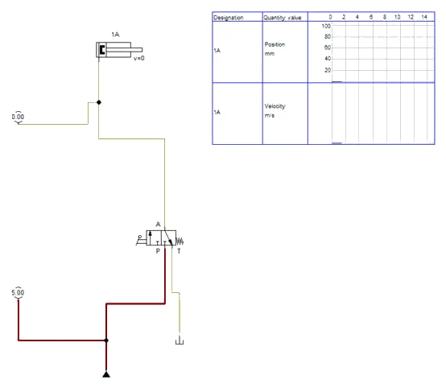
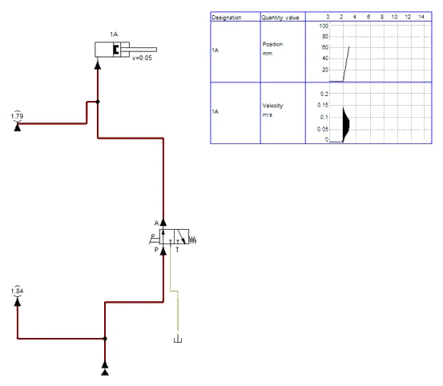
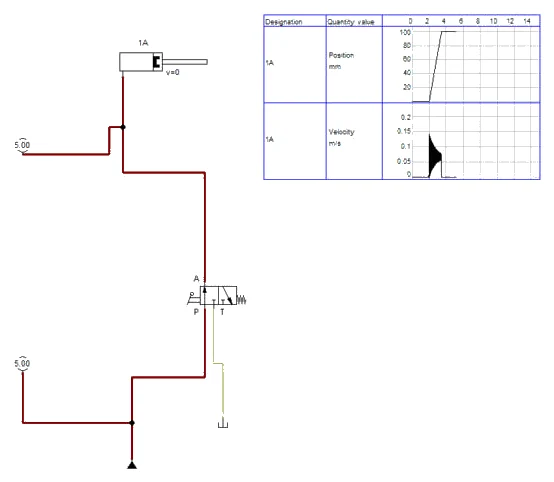
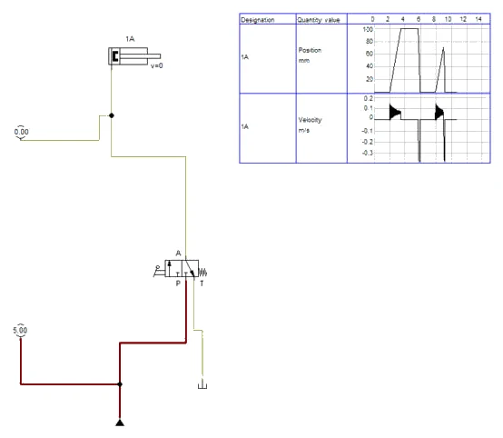
A3 · Dopuna: polagano spuštanje
- Za pitanje 5 u vod A između razvodnika i cilindra ugradite One-way flow control valve (prigušni ventil s paralelnim nepovratnim ventilom), Opening Level 7 %. Nepovratni ventil mora propuštati prema cilindru: ako je dizanje sporo, a spuštanje i dalje naglo, element je okrenut naopako — desni klik → Mirror → Horizontally i ponovno spojite oba voda.
- Dizanje je i dalje oko 1,5 s (ulje prolazi kroz nepovratni ventil), a spuštanje traje oko 3 s pri stalnoj brzini oko 0,03 m/s; 1Z1 za vrijeme spuštanja pokazuje 2,04 MPa — teret „gura” ulje kroz prigušnicu (Slike A3.1 i A3.2). Datoteka PIH_V31_prigusno_spustanje_v01.ct.
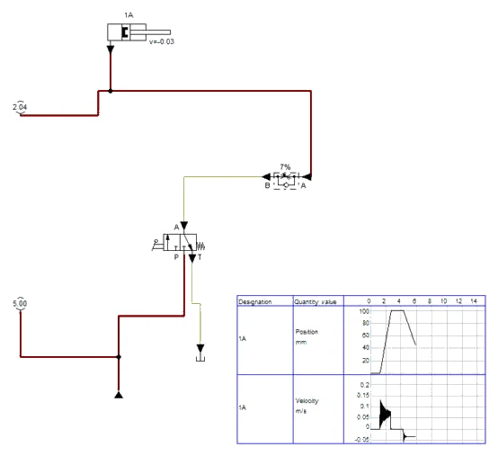
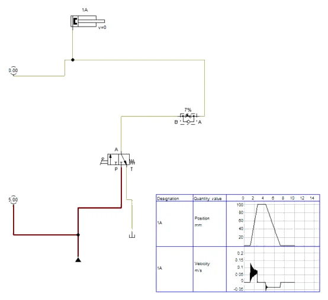
Simulacija i stol
U simulaciji nema propuštanja razvodnika, a teret je idealna masa; na stolu se stol u srednjem dijelu hoda ponaša isto, ali vremena se mjere štopericom i odstupaju za vrijeme reakcije i otvaranja razvodnika.
A4 · Pitanja i zadaci
1. Koju ulogu u krugu imaju sigurnosni ventil 0V1, razvodnik 1V1 i manometar 1Z1? Zašto bi krug bez 0V1 bio opasan?
Prikaži rješenje
0V1 ograničava najveći tlak u krugu na 50 bar. Crpka stalnog volumena tjera ulje bez obzira na otpor; kad je P zatvoren ili je cilindar na graničniku, ulje nema kamo nego kroz 0V1 u spremnik. Bez njega bi tlak rastao dok ne pukne crijevo, spojka ili kućište crpke. 1V1 određuje smjer toka: P→A (dizanje) ili A→T (spuštanje). 1Z1 pokazuje tlak u samom cilindru, dakle tlak koji stvarno drži teret.
2. Izračunajte tlak potreban za dizanje tereta od 1,0 kN cilindrom Ø25 mm. Koliki tlak očekujete na 1Z1 ako trenje brtvi traži dodatnih 5 % sile?
Prikaži rješenje
A = π · 25² / 4 = 490,9 mm². Bez trenja: p = F / A = 1000 N / 490,9 mm² = 2,04 N/mm² = 20,4 bar. S trenjem: p = 1050 N / 490,9 mm² = 2,14 N/mm² ≈ 21,4 bar. Očitanje na 1Z1 za vrijeme dizanja treba biti oko 21–23 bar; nešto više zbog otpora u crijevima i razvodniku.
U FluidSIM-u
U simulaciji (Slika A2.2) 1Z1 za vrijeme dizanja titra oko 2 MPa = 20 bar; bez trenja brtvi, jer ga model ne sadrži.
3. Koliko traje dizanje cijelog hoda od 100 mm ako crpka daje 2,0 l/min? Kolika je brzina klipnjače? Zašto je izmjereno vrijeme obično malo dulje?
Prikaži rješenje
V = A · s = 4,909 cm² · 10 cm = 49,1 cm³. Q = 2,0 l/min = 33,3 cm³/s. t = V / Q = 49,1 / 33,3 = 1,47 s. v = s / t = 100 mm / 1,47 s = 67,9 mm/s. Izmjereno vrijeme je dulje jer dio protoka propušta crpka (unutarnje propuštanje raste s tlakom), jer se ulje i crijeva malo stlače i šire dok tlak ne naraste, i zbog reakcije mjeritelja sa štopericom.
U FluidSIM-u
Simulacija daje oko 1,5 s (Slika A2.4).
4. Stol stoji dolje, ručica je puštena, a agregat radi. Koliku snagu crpka pretvara u toplinu? Za koliko bi se bez hlađenja zagrijalo 10 litara ulja za 10 minuta (ρ = 0,87 kg/l, c = 1,9 kJ/(kg·K))?
Prikaži rješenje
Sav protok ide kroz 0V1 pri 50 bar: P = p · Q = 50 · 10⁵ Pa · (2,0 / 60 000) m³/s = 167 W. Za 10 minuta: E = 167 W · 600 s = 100 kJ. m = 10 · 0,87 = 8,7 kg. ΔT = E / (m · c) = 100 / (8,7 · 1,9) ≈ 6 K. Zato se u industriji koriste razvodnici s rasterećenjem crpke u mirnom položaju ili crpka s regulacijom, a ne „kuhanje ulja“ preko sigurnosnog ventila.
U FluidSIM-u
U simulaciji 0Z1 u mirovanju pokazuje 5,00 MPa: P = 50 · 2 / 600 ≈ 0,17 kW.
5. Dopunite shemu: stol se mora spuštati polagano i jednoliko, bez obzira na to koliko je težak teret, a dizanje ne smije biti usporeno. Koji element dodajete, gdje i kako je okrenut?
Prikaži rješenje
U vod A, između 1V1 i 1A, ugrađuje se prigušno-nepovratni ventil. Nepovratni ventil propušta slobodno od razvodnika prema cilindru (dizanje punom brzinom), a pri spuštanju zatvara, pa ulje iz cilindra mora proći kroz prigušnicu. Prigušuje se izlazni tok, što je za vučni (spuštajući) teret jedino ispravno. Ako se traži brzina neovisna o teretu, umjesto obične prigušnice stavlja se tlačno kompenzirani regulator protoka s nepovratnim ventilom.
U FluidSIM-u
Dopuna je simulirana u A3 (datoteka PIH_V31_prigusno_spustanje_v01.ct).
6. Što se dogodilo kad ste pustili ručicu na polovici hoda? Zašto ovaj krug ne može zadržati teret u međupoložaju i koji bi razvodnik to omogućio?
Prikaži rješenje
Stol se spustio do dna, jer razvodnik u mirnom položaju spaja A s T. Razvodnik 3/2 ima samo dva položaja: „diži“ i „spuštaj“. Za zadržavanje treba treći položaj u kojem je A zatvoren — razvodnik 3/3 sa zatvorenim srednjim položajem ili 4/3 u kojem se koristi samo priključak A. Budući da klipni razvodnik uvijek malo propušta, za dugo držanje tereta u vod A dodaje se nepovratni ventil sjedišne izvedbe (deblokirajući, vidi vježbu V33).
U FluidSIM-u
Isto u simulaciji (Slika A2.4).
7. Po čemu se hidraulički jednoradni cilindar razlikuje od pneumatskog? Čemu služi odzračni priključak na gornjoj strani cilindra?
Prikaži rješenje
Pneumatski jednoradni cilindar gotovo uvijek ima povratnu oprugu, a ispušni zrak odlazi u okolinu. Hidraulički se najčešće vraća vanjskom silom (teretom, oprugom stroja), a ulje mora imati put natrag u spremnik kroz priključak T razvodnika. Ulje je gotovo nestlačivo, pa je gibanje mirnije i tlak određen teretom. Odzračni priključak spaja prostor iznad klipa s okolinom: pri gibanju klipa zrak ulazi i izlazi, pa se u tom prostoru ne stvara ni potlak ni pretlak. Na njega se stavlja mali pročistač da ne ulazi prašina.
8. Stvarni stol ima plunžer Ø50 mm i teret mase 400 kg. Koliki je tlak? Koliki bi promjer plunžera trebao biti da tlak ne prijeđe 15 bar?
Prikaži rješenje
F = m · g = 400 · 9,81 = 3924 N. A = π · 50² / 4 = 1963 mm². p = 3924 / 1963 = 2,0 N/mm² = 20,0 bar. Za p ≤ 15 bar = 1,5 N/mm²: A ≥ 3924 / 1,5 = 2616 mm², d ≥ √(4 · 2616 / π) = 57,7 mm. Uzima se prvi veći promjer iz niza, npr. 60 mm, uz koji je tlak 13,9 bar.
9. Koliko pokazuju 0Z1 i 1Z1 (a) dok se stol diže, (b) kad klipnjača stoji na graničniku uz pritisnutu ručicu, (c) kad je ručica puštena i stol dolje? Objasnite razlike.
Prikaži rješenje
(a) Oba pokazuju tlak tereta, oko 21–23 bar; 0Z1 malo više zbog pada tlaka u razvodniku. (b) Oba pokazuju 50 bar: gibanja nema, otpor je „beskonačan“ i tlak raste do otvaranja 0V1. (c) 0Z1 pokazuje 50 bar jer je P zatvoren i crpka tlači preko 0V1; 1Z1 pokazuje 0 bar jer je cilindar spojen sa spremnikom. Pravilo: tlak u hidrauličkom krugu stvara otpor, a sigurnosni ventil samo određuje njegovu gornju granicu.
Dio A · V32 Upravljanje dvoradnim cilindrom razvodnikom 4/2
Zadatak
Na tračnoj pili za rezanje čeličnih profila profil se prije rezanja steže hidrauličkom čeljusti. Čeljust gura vodoravni dvoradni cilindar: izvlačenjem steže profil, uvlačenjem ga otpušta. Da se profil ne pomakne pod pilom, potrebna je sila stezanja od najmanje 2,0 kN. Nakon rezanja čeljust se mora brzo povući da radnik može pomaknuti profil za sljedeći rez.
Na didaktičkom stolu čeljust predstavlja cilindar Ø25/16 mm s hodom 200 mm. Agregat daje oko 2,0 l/min, a sigurnosni ventil je namješten na 50 bar. Cilindrom upravlja ručni razvodnik 4/2 s povratnom oprugom: u mirnom položaju tlak je na strani klipnjače (čeljust otvorena), a dok radnik drži ručicu, tlak je na strani klipa (čeljust steže). Na oba voda cilindra ugrađeni su manometri, pa se vidi tlak na obje strane klipa u svakom trenutku.
Zadatak: spojite krug, izmjerite vremena izvlačenja i uvlačenja, tlakove u oba voda za vrijeme gibanja i na kraju hoda, izračunajte sile i brzine i usporedite ih s mjerenjem.
Sigurnost pri radu
Pažnja
Krug je pod tlakom do 50 bar. Crijeva spajajte i odspajajte samo uz isključen agregat i ispušten tlak: nakon isključivanja pomaknite ručicu 1V1 nekoliko puta u oba položaja i provjerite da 0Z1, 1Z1 i 1Z2 pokazuju 0 bar. Dvoradni cilindar može ostati pod tlakom i kad je agregat isključen ako je vod zatvoren — zato uvijek gledajte oba manometra na cilindru. Ne stavljajte ruke u područje hoda klipnjače i ne zaustavljajte je rukom.
Brze spojke utaknite do kraja i provjerite povlačenjem crijeva. Crijeva ne smiju biti presavijena, napeta ni položena preko oštrih rubova. Mjesto propuštanja tražite komadom kartona, nikad prstom. Proliveno ulje odmah obrišite. Kod ulja pod tlakom koje probije kožu potrebna je hitna liječnička pomoć, iako rana izvana izgleda mala. Zaštitne naočale nose se cijelo vrijeme dok agregat radi.
Shema
Razvodnik se na shemi uvijek crta u mirnom položaju, a vodovi se spajaju na kvadrat uz oprugu. Za vrijeme izvlačenja ulje s prstenaste strane klipa izlazi kroz B i T u spremnik; za vrijeme uvlačenja ulje s klipne strane izlazi kroz A i T. Manometri 1Z1 i 1Z2 pokazuju tlak na klipnoj i na prstenastoj strani, pa se iz njih može izračunati stvarna sila na klipnjači: F = pA · A1 − pB · A2.
Vježba se radi u FluidSIM-u
Koraci postupka vježbe koji se odnose na spajanje na didaktičkoj ploči i mjerenje štopericom ili manometrom izvode se u simulaciji. Gdje simulacija ne može pokazati pojavu iz pokusa, to je napisano uz korak.
A1 · Shema stezača u FluidSIM-H
- Nova shema u FluidSIM-H. Agregat: Pump unit (simplified representation), Operating Pressure 5 MPa, Flow 2 l/min. Sigurnosni ventil 0V1 ugrađen je u element.
- Razvodnik 1V1: Configure Way Valve → 4/2, lijevo ručica (Hand lever), desno povratna opruga. Kvadrat uz oprugu (mirni položaj) prekrižene strelice P→B, A→T; lijevi kvadrat paralelne strelice P→A, B→T. T na spremnik.
- Cilindar 1A: Double acting cylinder, Parameters: hod 200 mm, klip 25 mm, klipnjača 16 mm. FluidSIM sam izračuna Piston Area 4,91 cm² i Ring Area 2,9 cm² — isto kao A1 i A2 u pitanju 2. Configuration → Sensing, oznaka 1A.
- A razvodnika na klipnu stranu, B na stranu klipnjače. Tri manometra: 0Z1 na vod P, 1Z1 na vod A, 1Z2 na vod B (vod manometra ispustite na postojeći vod — nastaje točka račvanja). State Diagram s položajem i brzinom cilindra, Fixed interval 0–15 s. F6 → No superficial errors detected.
A2 · Izvlačenje, kraj hoda i uvlačenje
- Start: ručica puštena, razvodnik u mirnom položaju P→B. Klipnjača stoji uvučena; 0Z1 i 1Z2 pokazuju 5,00 MPa, 1Z1 0 — cijeli protok crpke ide preko sigurnosnog ventila (Slika A2.1, pitanje 7 u obrnutom smjeru).
- Shift + klik na lijevo polje razvodnika drži ručicu: P→A, B→T, klipnjača se izvlači brzinom 0,07 m/s. Bez tereta 1Z1 i 1Z2 pokazuju samo 0,02 MPa, a 0Z1 0,09 MPa — pad tlaka kroz razvodnik (Slika A2.2).
- Izvlačenje 200 mm traje oko 3 s, kao u proračunu (2,95 s). Na kraju hoda uz držanu ručicu 0Z1 i 1Z1 pokazuju 5,00 MPa, 1Z2 0 (Slika A2.3) — odgovor na pitanje 7.
- Ponovni Shift + klik pušta ručicu: opruga vraća razvodnik, klipnjača se uvlači brzinom oko 0,12 m/s i hod traje oko 1,7 s. 1Z2 pokazuje 0,34 MPa, a 1Z1 0,19 MPa: to je povratni tlak ulja koje s klipne strane izlazi kroz A→T, a protok mu je 3,4 l/min (pitanje 4, Slika A2.4).
- Dijagram (Slika A2.5): omjer vremena izvlačenja i uvlačenja 3 / 1,7 ≈ 1,7 — omjer površina φ = 1,69.
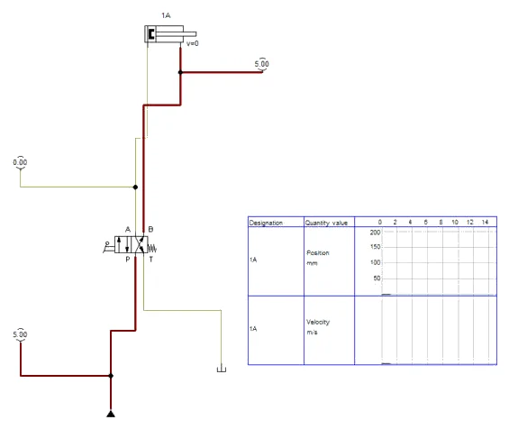
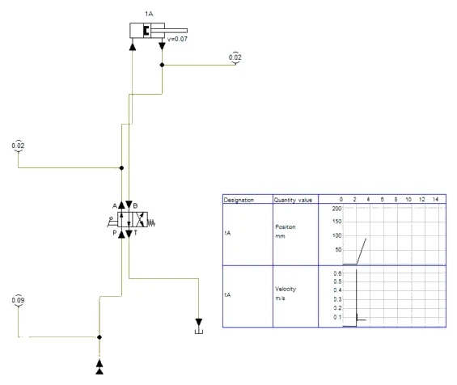
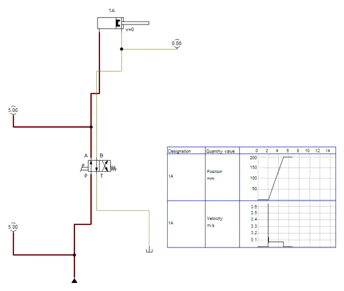
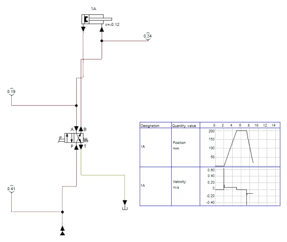
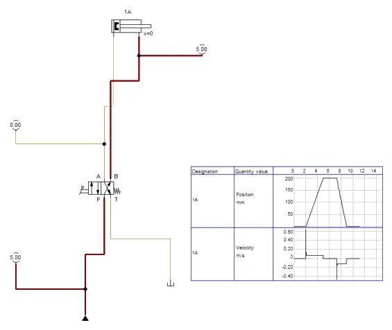
A3 · Mirni položaj s izvučenom klipnjačom
- Pitanje 6, rješenje (a): u stanju uređivanja obrišite oba voda između razvodnika i cilindra i spojite ih ukriženo — B na klipnu stranu, A na stranu klipnjače. Nakon starta klipnjača se odmah izvuče i ostaje izvučena dok se ručica ne drži.
- Rješenje (b): dvoklik na razvodnik i u Configure Way Valve zamijenite simbole kvadrata (uz oprugu paralelne strelice). Shema rješenja ostaje u izvornom obliku; obje izmjene isprobajte i ne spremajte preko rješenja.
Simulacija i stol
Model cilindra u FluidSIM-u nema trenja brtvi, pa tlak za vrijeme izvlačenja bez tereta pokazuje samo otpor razvodnika (0,02 MPa). Na stolu 1Z1 pokazuje nekoliko bar više — razlika je sila trenja iz pitanja 5.
A4 · Pitanja i zadaci
1. Opišite tokove ulja kroz razvodnik 1V1 u mirnom i u radnom položaju. Zašto je za stezač izabran baš mirni položaj s tlakom na strani klipnjače?
Prikaži rješenje
Mirni položaj: P→B, A→T — tlak na prstenastoj strani, klipnjača uvučena. Radni položaj: P→A, B→T — klipnjača se izvlači. Kad radnik pusti ručicu, čeljust se sama otvara. To je razumno za ručno upravljanje, jer radnik mora svjesno držati stezanje; u pogonu se za duže stezanje koristi razvodnik sa zapornim uređajem ručice ili elektromagnetski razvodnik, a zadržavanje sile osigurava se nepovratnim ventilom.
2. Izračunajte brzine izvlačenja i uvlačenja i vremena cijelog hoda od 200 mm uz protok 2,0 l/min.
Prikaži rješenje
A1 = π · 25² / 4 = 490,9 mm², A2 = 490,9 − π · 16² / 4 = 490,9 − 201,1 = 289,8 mm². Q = 2,0 l/min = 33 333 mm³/s. vizv = 33 333 / 490,9 = 67,9 mm/s; tizv = 200 / 67,9 = 2,95 s. vuvl = 33 333 / 289,8 = 115,0 mm/s; tuvl = 200 / 115,0 = 1,74 s. Omjer vremena 2,95 / 1,74 = 1,69 jednak je omjeru površina φ.
U FluidSIM-u
Simulacija (Slika A2.5): izvlačenje oko 3 s pri 0,07 m/s, uvlačenje oko 1,7 s pri 0,12 m/s.
3. Kolike su teorijske sile izvlačenja i uvlačenja pri 50 bar, a kolike uz stupanj djelovanja 0,9? Koliki tlak mora pokazati 1Z1 da čeljust ostvari traženu silu od 2,0 kN?
Prikaži rješenje
Fizv = 5 N/mm² · 490,9 mm² = 2454 N; Fuvl = 5 · 289,8 = 1449 N. Uz η = 0,9: 2209 N i 1304 N. Za 2,0 kN teorijski p = 2000 / 490,9 = 4,07 N/mm² = 40,7 bar; uz η = 0,9 potrebno je 2000 / (0,9 · 490,9) = 4,53 N/mm² ≈ 45 bar. Sigurnosni ventil od 50 bar ostavlja malu rezervu; kad čeljust nalegne na profil, tlak naraste upravo do 50 bar.
4. Koliki protok izlazi iz klipne strane cilindra za vrijeme uvlačenja? Zašto je to važno za izbor razvodnika, povratnog voda i filtra?
Prikaži rješenje
Qpovr = Q · A1 / A2 = 2,0 · 1,694 = 3,39 l/min. Povratni protok je veći od protoka crpke, pa razvodnik, povratno crijevo i filtar moraju biti izabrani za veći protok. Ako su premali, na T nastaje povratni tlak koji koči uvlačenje i opterećuje brtve. Kod cilindara s debelom klipnjačom (φ = 2 i više) ta se pojava izrazito osjeti.
U FluidSIM-u
U simulaciji se taj protok vidi kao povratni tlak: 1Z1 za vrijeme uvlačenja pokazuje 0,19 MPa (Slika A2.4).
5. Za vrijeme izvlačenja bez tereta 1Z1 pokazuje 6 bar, a 1Z2 pokazuje 2 bar. Kolika je sila trenja u cilindru? Zašto 1Z2 ne pokazuje 0 bar?
Prikaži rješenje
Bez vanjskog tereta sva sila odlazi na trenje: Ftr = pA · A1 − pB · A2 = 0,6 · 490,9 − 0,2 · 289,8 = 294,5 − 58,0 ≈ 237 N. 1Z2 pokazuje povratni tlak: ulje koje izlazi s prstenaste strane mora proći kroz razvodnik, crijeva, filtar i spojke, a svaki od tih otpora traži pad tlaka. Taj tlak djeluje protiv gibanja, pa se u proračunu sile ne smije zanemariti.
U FluidSIM-u
U simulaciji trenja nema: 1Z1 i 1Z2 za vrijeme izvlačenja pokazuju jednako, 0,02 MPa (Slika A2.2).
6. Dopunite shemu: tehnolog traži da klipnjača u mirnom položaju razvodnika bude izvučena. Navedite dva rješenja i nacrtajte ih.
Prikaži rješenje
(a) Zamijene se vodovi na cilindru: B razvodnika spoji se s klipnom stranom, A s prstenastom. Razvodnik ostaje isti. (b) Upotrijebi se razvodnik 4/2 kojemu je uz oprugu kvadrat s paralelnim strelicama (P→A, B→T), a u radnom položaju prekrižene strelice. Na shemi to znači zamijeniti sadržaj dvaju kvadrata. U oba slučaja treba provjeriti da nestanak ulja ili isključenje agregata ne dovodi do opasnog gibanja.
7. Radnik drži ručicu pritisnutom i nakon što je čeljust stegnula profil. Koliko pokazuju 0Z1, 1Z1 i 1Z2 i kamo odlazi protok crpke? Što to znači za ulje?
Prikaži rješenje
0Z1 i 1Z1 pokazuju 50 bar, 1Z2 pokazuje 0 bar (B je spojen s T). Klipnjača stoji, pa cijeli protok crpke prolazi kroz sigurnosni ventil. Pretvara se u toplinu oko P = 50 · 10⁵ · 2,0 / 60 000 = 167 W. Kratkotrajno je to prihvatljivo, ali kod dugog stezanja ulje se grije, pa se koristi rasterećenje crpke ili akumulator s nepovratnim ventilom.
U FluidSIM-u
Isto u simulaciji (Slika A2.3): 0Z1 = 1Z1 = 5,00 MPa, 1Z2 = 0.
8. Hidraulička preša HP-1 ima cilindar Ø80/50 mm i protok 22,0 l/min, a brzine su joj 73 mm/s izvlačenje i 120 mm/s uvlačenje. Usporedite omjer tih brzina s omjerom na didaktičkom cilindru i objasnite što ga određuje.
Prikaži rješenje
HP-1: 120 / 73 = 1,64, a φ = 50,27 / 30,63 = 1,64. Didaktički cilindar: 115,0 / 67,9 = 1,69 = φ. Omjer brzina uz isti protok ovisi samo o omjeru površina, odnosno o odnosu promjera klipnjače i klipa, a ne o veličini cilindra ni o protoku crpke.
Dio B · V33 Deblokirajući nepovratni ventil i razvodnik 4/3
Zadatak
Kupka za odmašćivanje dijelova ima poklopac koji diže uspravni hidraulički cilindar. Radnik podigne poklopac, spusti košaru s dijelovima u kupku i zatim poklopac spusti. Za vrijeme punjenja košare poklopac mora nekoliko minuta stajati gore bez ikakvog spuštanja, jer se radnik nalazi ispod njega. Prvo rješenje s običnim razvodnikom pokazalo je da poklopac za dvadesetak minuta sjedne za dva centimetra — ulje propušta kroz zračnost klipa razvodnika.
Na didaktičkom stolu poklopac predstavlja uspravni dvoradni cilindar Ø25/16 mm s hodom 200 mm, opterećen silom od 1,5 kN. Cilindrom upravlja ručni razvodnik 4/3 centriran oprugama, sa srednjim položajem u kojem su P, A, B i T međusobno spojeni. U vod A, između razvodnika i cilindra, ugrađen je deblokirajući nepovratni ventil s omjerom upravljanja 1 : 4, a njegov upravljački priključak X spojen je s vodom B. Agregat daje oko 2,0 l/min, sigurnosni ventil je namješten na 50 bar.
Zadatak: najprije pokažite što se događa bez deblokirajućeg ventila, zatim ga ugradite, izmjerite tlak držanja, tlak u vodu B pri kojem teret počinje silaziti i ponašanje tereta u srednjem položaju razvodnika.
Sigurnost pri radu
Pažnja
Deblokirajući nepovratni ventil zadržava tlak u cilindru i nakon isključenja agregata. Manometar 1Z1 može pokazivati 30 bar i više dok svi drugi pokazuju 0. Pomicanje ručice bez rada crpke taj tlak ne ispušta, jer nema tlaka koji bi otvorio ventil. Prije odspajanja zato teret spustite do kraja hoda dok agregat radi, zatim isključite agregat, pomaknite ručicu u sve položaje i provjerite da sva tri manometra pokazuju 0 bar. Nikad ne odspajajte crijevo između 1V2 i cilindra dok je teret gore.
Uređaj za opterećenje mora biti osiguran od pada i bočnog pomaka. Ruke i alat ne stavljajte ispod tereta ni kad „sigurno drži“. U prvom dijelu vježbe, bez 1V2, teret u srednjem položaju razvodnika pada punom brzinom — prije pokusa provjerite da je područje ispod tereta prazno. Brze spojke spajajte samo bez tlaka i provjerite ih povlačenjem. Propuštanje tražite kartonom, ne prstima; proliveno ulje odmah obrišite; ozljeda uljem pod tlakom traži hitnu liječničku pomoć. Zaštitne naočale cijelo vrijeme.
Shema
Dizanje (lijevi položaj, P→A, B→T): ulje slobodno prolazi kroz 1V2 prema cilindru. Držanje (srednji položaj): vod A iza ventila spojen je sa spremnikom, X je bez tlaka, pa kuglica ili stožac sjeda u sjedište i teret drži tlak u zatvorenom prostoru ispod klipa. Spuštanje (desni položaj, P→B, A→T): tlak u vodu B istodobno gura klip prema dolje i preko X otvara 1V2, pa ulje ispod klipa može otjecati u spremnik.
Ventil se otvori kad sila upravljačkog klipa nadvlada silu tlaka na sjedištu: pX · AX ≥ pA · AS. Uz omjer upravljanja AS : AX = 1 : 4 potreban je upravljački tlak od oko četvrtine tlaka tereta.
Vježba se radi u FluidSIM-u
Koraci postupka vježbe koji se odnose na spajanje na didaktičkoj ploči i mjerenje štopericom ili manometrom izvode se u simulaciji. Gdje simulacija ne može pokazati pojavu iz pokusa, to je napisano uz korak.
B1 · Krug bez deblokirajućeg ventila
- Shemu iz V32 kopirajte u novu shemu i zamijenite razvodnik: Configure Way Valve → 4/3, ručica lijevo, opruge na oba kraja, srednji kvadrat s optočnim spojem (P, A, B i T spojeni — prvi simbol popisa srednjeg polja koji spaja sva četiri priključka).
- Cilindar 1A Ø25/16, hod 200 mm. Teret od 1,5 kN zadaje se na kartici Force profile kao stalna sila 1500 N koja gura klipnjaču prema uvlačenju; Mounting angle ostaje 0. (Teška masa uz kut 90° u modelu titra i puže, pa je stalna sila bolji nadomjestak tereta.)
- Prvi dio, bez 1V2: vod A ide izravno na cilindar. Dignite teret (Shift + klik lijevo polje) i pustite ručicu na pola hoda — razvodnik se vraća u srednji položaj i teret pada brzinom oko 0,4 m/s, a 1Z1 pokazuje oko 3 MPa samo dok ulje istječe (Slika B1.1, pitanje 1).
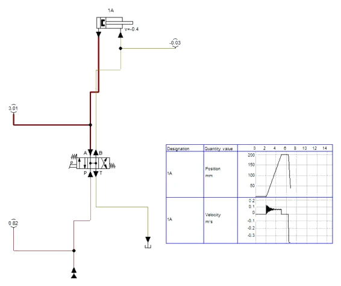
B2 · Ugradnja 1V2, dizanje i držanje
- Ugradite 1V2: Shutoff Valves → Pilot-operated check valve (deblokirajući nepovratni ventil s oprugom). Priključak B ventila prema cilindru, A prema razvodniku; upravljački priključak X spojite s vodom B. Dvoklik: Area ratio 4 (omjer upravljanja 1 : 4), Nominal pressure (opruga) 1 MPa.
- U vod A između 1V2 i razvodnika ugradite prigušni ventil (Throttle valve) s Opening Level 50 % — dopuna iz pitanja 6. Manometri: 1Z1 između 1V2 i cilindra, 1Z2 na vod B i X, 0Z1 na P.
- Dizanje: 1Z1 pokazuje 3,08 MPa (teret), 0Z1 4,78 MPa — razlika je pad tlaka na prigušnom ventilu, kroz koji ulje prolazi i pri dizanju (Slika B2.1). S jednosmjernim prigušnim ventilom dizanje ne bi bilo prigušeno.
- Pustite ručicu na oko 150 mm: teret stoji, 1Z1 pokazuje 3,09 MPa (proračun 3,06 MPa), a 1Z2 i 0Z1 samo 0,07 i 0,13 MPa — crpka je rasterećena kroz optočni srednji položaj, a X je bez tlaka (Slika B2.2, pitanja 2 i 5).
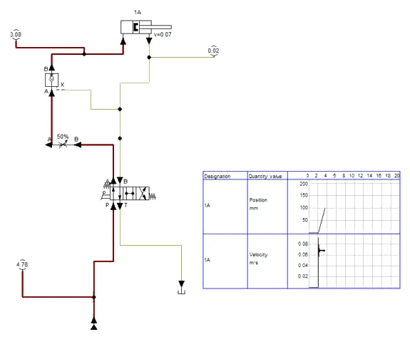
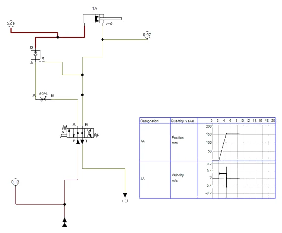
B3 · Spuštanje, prigušni ventil i omjer upravljanja
- Shift + klik desno polje razvodnika: P→B, tlak u B i X otvara 1V2 i teret se spušta. Za vrijeme spuštanja 1Z2 pokazuje oko 0,4–0,5 MPa, a 1Z1 4,6–6,4 MPa — prigušni ventil koči istjecanje ulja ispod klipa (Slika B3.1). Spuštanje 150 mm traje oko 1,3 s (Slika B3.2).
- Brzina na dijagramu je gusto „nazubljena”: model ventila se naizmjence otvara i zatvara, ali položaj pada jednoliko. Bez prigušnog ventila (Slika B3.3) teret se ne spušta do kraja — ventil zatvara, teret stane, simulacija se usporava. To je trzajno spuštanje iz pitanja 6.
- Pokus s omjerom upravljanja: postavite Area ratio na 1. Tlak od 5 MPa u vodu X više ne nadvlada tlak tereta, 1Z1 naraste na 6,01 MPa i teret se ne spusti (Slika B3.4) — zato deblokirajući ventil ima upravljački klip veće površine od sjedišta. Vratite 4 prije spremanja.
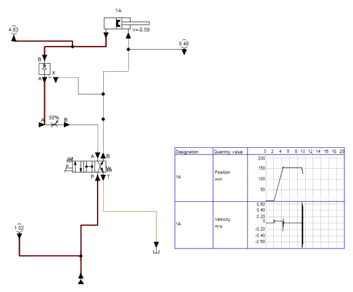
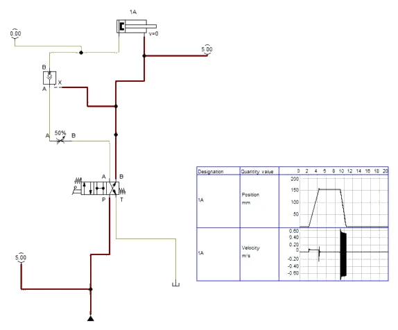
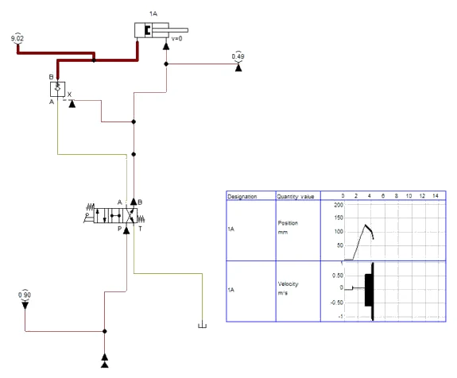
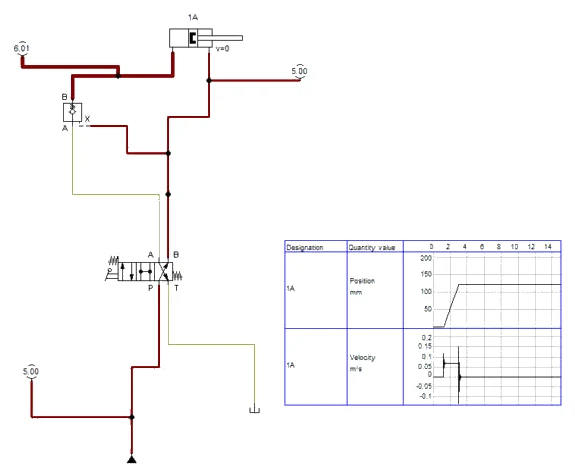
Simulacija i stol
Sjedišni ventil u modelu ne propušta, pa pad tereta u deset minuta (pitanje 4) simulacija ne pokazuje ni bez 1V2 u zatvorenom srednjem položaju. Tlak deblokiranja se na stolu mjeri polaganim pomicanjem ručice; u FluidSIM-u ručica ima samo krajnje položaje, pa se vidi samo tlak za vrijeme spuštanja.
B4 · Pitanja i zadaci
1. Što ste opazili u prvom dijelu vježbe, bez deblokirajućeg ventila, kad je ručica puštena? Zašto?
Prikaži rješenje
Teret je pao do dna. U srednjem položaju razvodnik spaja A sa spremnikom, pa ništa ne zatvara ulje ispod klipa. Srednji položaj s optočnim spojem rasterećuje crpku, ali sam po sebi ne može držati teret — to u ovom krugu radi isključivo 1V2.
U FluidSIM-u
Isto u simulaciji (Slika B1.1): teret pada brzinom oko 0,4 m/s.
2. Koliki tlak mora pokazivati 1Z1 dok cilindar drži teret od 1,5 kN? Pokazuje li 1Z1 isti tlak i kad se agregat isključi?
Prikaži rješenje
A1 = π · 25² / 4 = 490,9 mm². pA = 1500 / 490,9 = 3,06 N/mm² = 30,6 bar. Da, isti tlak ostaje i nakon isključenja agregata, jer je ulje zatvoreno između sjedišta 1V2 i klipa. Upravo zato taj dio kruga treba posebnu pozornost pri odspajanju.
U FluidSIM-u
Simulacija (Slika B2.2): 1Z1 = 3,09 MPa = 30,9 bar.
3. Koliki je teorijski tlak u vodu X potreban da se 1V2 otvori uz omjer upravljanja 1 : 4? Kolika dodatna sila zbog tog tlaka gura klip prema dolje?
Prikaži rješenje
pX ≥ pA · AS / AX = 30,6 / 4 = 7,6 bar (bez opruge ventila i bez povratnog tlaka na izlazu). Isti tlak djeluje na prstenastu površinu: F = 0,76 N/mm² · 289,8 mm² ≈ 221 N. Kad se ventil otvori, tlak ispod klipa pada, pa se sila na prstenastoj strani i težina tereta zajedno troše na potiskivanje ulja kroz povratni vod. Izmjereni tlak deblokiranja obično je nešto viši od 7,6 bar zbog opruge i trenja.
4. Razvodnik s klipom propušta 0,5 cm³/min pri tlaku od 30 bar. Za koliko bi se teret spustio za 20 minuta bez deblokirajućeg ventila (uz srednji položaj sa zatvorenim A i B)?
Prikaži rješenje
Brzina pada v = Q / A1 = 0,5 cm³/min / 4,909 cm² = 0,102 cm/min ≈ 1,0 mm/min. Za 20 minuta: 20 mm. Sjedišni ventil (kuglica ili stožac) zatvara bez zračnosti i praktički ne propušta, pa teret ostaje na mjestu. Za dugotrajno držanje zato se ne oslanja na klipni razvodnik.
5. Zašto je za ovaj krug izabran srednji položaj u kojem su P, A, B i T spojeni? Što bi se dogodilo sa srednjim položajem u kojem su svi priključci zatvoreni?
Prikaži rješenje
Deblokirajući ventil sigurno zatvara samo ako su i vod X i izlaz ventila (vod A prema razvodniku) bez tlaka. Optočni srednji položaj to osigurava i usput rasterećuje crpku: ulje se vraća u spremnik uz tlak od nekoliko bar, pa se ne grije. Sa zatvorenim srednjim položajem ostao bi tlak zarobljen u vodu B i X; ventil bi mogao ostati djelomično otvoren i teret bi polako klizio. Crpka bi uz to tlačila preko sigurnosnog ventila i grijala ulje.
U FluidSIM-u
Simulacija (Slika B2.2): u optočnom srednjem položaju 0Z1 pokazuje samo 0,13 MPa.
6. Dopunite shemu: pri spuštanju se teret giba trzajno (ventil se naizmjence otvara i zatvara). Gdje ćete ugraditi prigušni ventil i zašto to pomaže? Nacrtajte dopunu.
Prikaži rješenje
Prigušni ventil (ili prigušno-nepovratni, s nepovratnim ventilom koji propušta prema cilindru) ugrađuje se u vod A između 1V2 i razvodnika. Trzanje nastaje jer teret pri otvaranju ubrzava, ulje brže izlazi nego što ga crpka dovodi u B, tlak u X padne i ventil zatvori. Prigušivanje izlaznog toka koči teret, tlak u B ostaje iznad tlaka deblokiranja i ventil ostaje stalno otvoren. Dizanje nije usporeno jer ulje prema cilindru prolazi kroz nepovratni ventil prigušnog sklopa.
U FluidSIM-u
U simulaciji prigušni ventil od 50 % u vodu A (Slike B3.2 i B3.3).
7. Koliku snagu crpka gubi u srednjem položaju razvodnika ako je pad tlaka kroz optočni spoj 3 bar? Usporedite sa srednjim položajem koji zatvara P (tlak 50 bar).
Prikaži rješenje
Optočni spoj: P = 3 · 10⁵ Pa · 2,0 / 60 000 m³/s = 10 W. Zatvoren P: P = 50 · 10⁵ · 2,0 / 60 000 = 167 W. Kod preše HP-1 s 22,0 l/min i 160 bar razlika bi bila još izrazitija: oko 5,9 kW topline bez rasterećenja.
8. Može li se deblokirajući nepovratni ventil ugraditi u vod B umjesto u vod A? Obrazložite za uspravni cilindar s teretom na klipnjači.
Prikaži rješenje
Ne za ovaj slučaj. Teret gura klip prema dolje i stvara tlak ispod klipa, dakle u vodu A. Ventil mora zatvoriti upravo taj prostor. Ventil u vodu B ne bi spriječio istjecanje ulja ispod klipa. Ako se teret mora držati u oba smjera (npr. vodoravni klizač pod promjenjivom silom), ugrađuje se dvostruki deblokirajući nepovratni ventil u oba voda, s ukrštenim upravljanjem (vidi V36).
Dio C · V38 Tlačna sklopka
Zadatak
Na stroju za bušenje prirubnica obradak se steže hidrauličkim stezačem. Upravljački sustav stroja smije pokrenuti vreteno i posmak tek kad je obradak stvarno stegnut silom od najmanje 1,5 kN. Ako tlak stezanja za vrijeme obrade padne (propuštanje, kvar crpke), obrada se mora zaustaviti. Položaj klipnjače to ne može potvrditi, jer obradci imaju različite debljine — mjeri se tlak.
Na didaktičkom stolu stezač je dvoradni cilindar Ø25/16 mm s hodom 200 mm, a upravlja ga elektromagnetski razvodnik 4/2 s povratnom oprugom (Y1 steže). Na vodu A između razvodnika i cilindra ugrađeni su tlačna sklopka B1 i manometar 1Z1. Upravljački napon je 24 V istosmjerno. Tipkalo S1 pokreće stezanje, tipkalo S0 otpušta. Relej K1 drži stezanje (samodržanje), a relej K2, koji uključuje tlačna sklopka, pali signalnu lampicu H1 „stegnuto“ i svojim drugim kontaktima daje dozvolu obrade. Tlačna sklopka namješta se na uklop pri 35 bar; isklop pri padu tlaka treba biti oko 32 bar. Agregat daje oko 2,0 l/min, sigurnosni ventil je na 50 bar.
Zadatak: spojite hidraulički i električni dio, namjestite tlačnu sklopku, izmjerite uklopnu i isklopnu točku, provjerite ponašanje pri stezanju s obratkom i bez njega te pri nestanku napona.
Sigurnost pri radu
Pažnja
Električni dio spajajte samo uz isključen izvor 24 V, a hidraulički samo uz isključen agregat i ispušten tlak. Kad se uključi napon, cilindar se može pomaknuti bez ikakvog pokreta ručice — prije uključivanja izvora provjerite da nitko nema ruke u području klipnjače. Za ispuštanje tlaka isključite agregat, pritisnite S1 i S0 da razvodnik promijeni položaj, isključite izvor i provjerite da 0Z1 i 1Z1 pokazuju 0 bar.
Pri namještanju tlačne sklopke privremeno se mijenja namještenje sigurnosnog ventila; nakon mjerenja obvezno ga vratite na 50 bar i provjerite manometrom. Električni vodiči ne smiju ležati u lokvi ulja ni biti napeti preko crijeva. Brze spojke provjerite povlačenjem, propuštanje tražite kartonom, proliveno ulje odmah obrišite. Ozljeda uljem pod tlakom traži hitnu liječničku pomoć. Zaštitne naočale cijelo vrijeme.
Shema
Pritiskom na S1 relej K1 privuče i preko svog kontakta u stazi 2 ostaje privučen i kad se S1 pusti. Kontakt K1 u stazi 3 uključuje Y1: razvodnik spaja P→A i stezač se izvlači. Dok klipnjača putuje, tlak je nizak. Kad čeljust nalegne na obradak, tlak u vodu A brzo raste; pri 35 bar kontakt B1 se zatvori, privuče K2 i upali se H1. Pritisak na S0 prekida stazu 1, K1 otpusti, Y1 ostaje bez napona i opruga vraća razvodnik — tlak u vodu A pada, B1 otvara i H1 se gasi.
Vježba se radi u FluidSIM-u
Koraci postupka vježbe koji se odnose na spajanje na didaktičkoj ploči i mjerenje štopericom ili manometrom izvode se u simulaciji. Gdje simulacija ne može pokazati pojavu iz pokusa, to je napisano uz korak.
C1 · Hidraulički i električni dio u FluidSIM-H
- Hidraulički dio: Pump unit 5 MPa, 2 l/min; cilindar 1A Ø25/16, hod 200 mm (Sensing, oznaka 1A). Razvodnik 1V1: Valves → Solenoid Operated → 4/2 s povratnom oprugom; dvoklik na oznaku uz elektromagnet → Y1. Mirni položaj P→B, A→T.
- Tlačna sklopka B1: Measuring instruments and Sensors → Pressure switch (Pressure se…). Dvoklik: Switching pressure 3.5 MPa, oznaka B1. Priključak je na desnoj strani simbola; ako je s krive strane, prije spajanja Edit → Mirror → Horizontally. Vod sklopke i vod manometra 1Z1 ispustite na vod A između razvodnika i cilindra.
- Električni dio (Electrical controls): staza 1 — +24V, S0 (Pushbutton, break), S1 (Pushbutton, make) i paralelno s njim radni kontakt K1, svitak K1, 0V; staza 2 — kontakt K1 i elektromagnet Y1; staza 3 — kontakt B1 (Make switch, oznaka B1 — FluidSIM ga po oznaci veže s tlačnom sklopkom) i svitak K2; staza 4 — kontakt K2 i signalna lampica H1 (Indicator light, oznaku H1 upišite kao tekst: Insert → Miscellaneous → Text).
- Samodržanje je u FluidSIM-u nacrtano kao paralelna grana u prvoj stazi, pa shema ima četiri staze; na radnom listu ista shema ima pet staza. Ispod svitaka FluidSIM sam ispisuje tablicu kontakata. State Diagram: cilindar (položaj, brzina) i manometar 1Z1 (tlak), Fixed interval 0–20 s. Ako FluidSIM javi Objects outside the drawing area, povećajte crtež: File → Drawing Size → DIN A3.
C2 · Stezanje, signal „stegnuto” i otpuštanje
- Start: S0 zatvoren, K1 otpušten, Y1 bez napona; klipnjača uvučena, 1Z1 = 0 (Slika C2.1).
- Klik na S1: K1 privuče i drži se preko vlastitog kontakta, Y1 prebaci razvodnik i klipnjača se izvlači. Za vrijeme gibanja 1Z1 pokazuje samo 0,02 MPa — B1 je otvoren i H1 ne svijetli (Slika C2.2).
- Na kraju hoda tlak u vodu A u djeliću sekunde naraste na 5,00 MPa; pri 3,5 MPa B1 zatvori, K2 privuče i H1 svijetli (Slika C2.3). U simulaciji nema obratka: lampica je upalila na kraju hoda — to je opažanje iz pitanja 5.
- Klik na S0: K1 otpusti, Y1 ostaje bez napona, opruga vraća razvodnik. Tlak u A padne, B1 otvori, H1 se ugasi, klipnjača se uvlači (Slika C2.4). Dijagram (Slika C2.5): izvlačenje oko 3 s, skok tlaka na kraju hoda, uvlačenje oko 1,7 s.
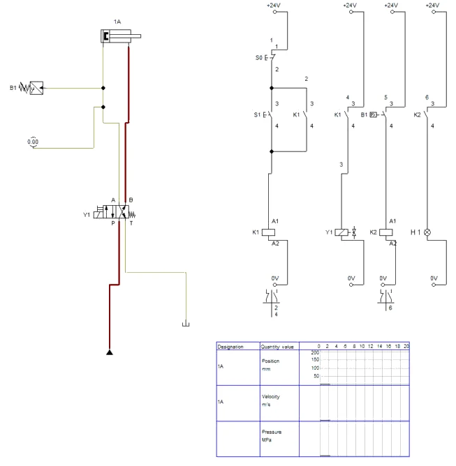
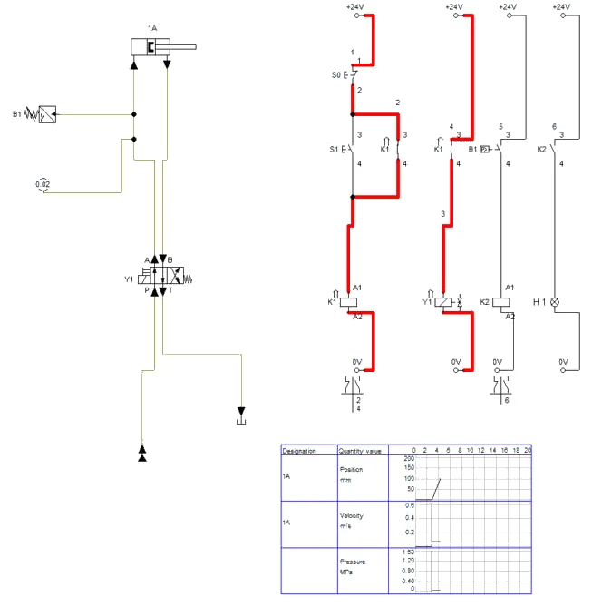
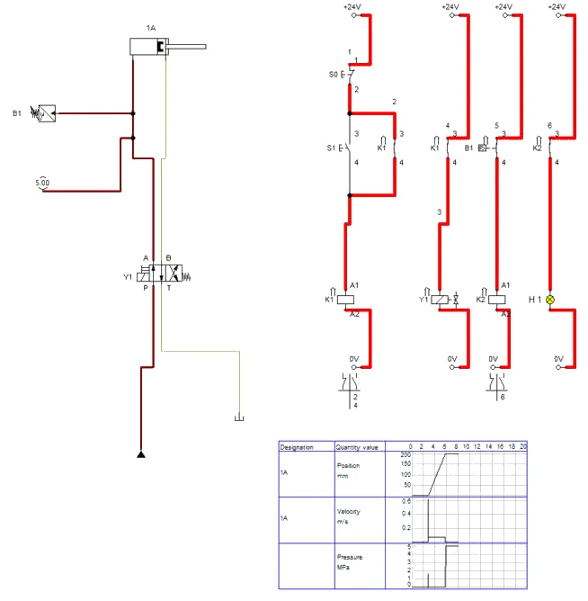
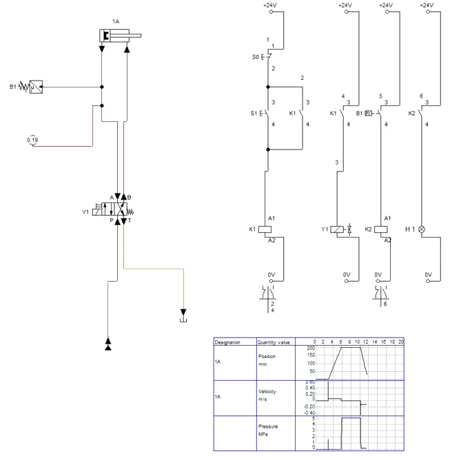
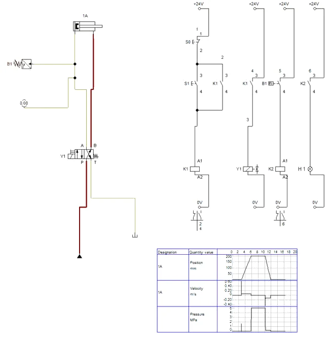
C3 · Tlak ispod uklopne točke
- Uklopna točka: zaustavite simulaciju i agregatu postavite Operating Pressure 3 MPa (ispod uklopne točke). Nakon S1 klipnjača dođe na kraj hoda, 1Z1 pokazuje 3,00 MPa, ali B1 ostaje otvoren i H1 ne svijetli (Slika C3.1) — dozvola obrade se ne daje, jer bi sila bila samo 3,0 · 490,9 ≈ 1473 N < 1,5 kN.
- Vratite Operating Pressure na 5 MPa prije spremanja.
- Nestanak napona (pitanje 6) u simulaciji izgleda isto kao pritisak na S0 (Slika C2.4): Y1 bez napona, opruga vraća razvodnik i stezač otpušta.
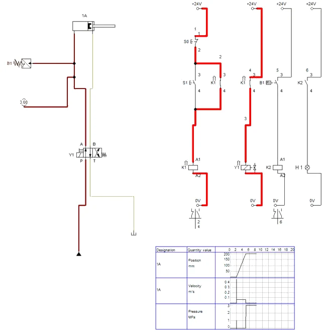
Simulacija i stol
Tlačna sklopka u FluidSIM-u ima samo tlak uklopa i nema histereze, a tlak u modelu raste trenutačno. Histerezu (pitanja 3 i 8) i vrijeme porasta tlaka (pitanje 7) mjeri se samo na stolu.
C4 · Pitanja i zadaci
1. Opišite ulogu svake strujne staze. Zašto je S0 izveden kao mirni kontakt i zašto je u seriji ispred samodržanja?
Prikaži rješenje
Staza 1: S0, S1 i svitak K1; staza 2: kontakt K1 paralelno s S1 (samodržanje); staza 3: kontakt K1 uključuje Y1; staza 4: B1 uključuje K2; staza 5: kontakt K2 pali H1. S0 je mirni kontakt jer mora prekinuti samodržanje; ispred je samodržanja da ga prekida bez obzira na stanje K1. Mirni kontakt je i sigurniji: prekid vodiča do S0 djeluje kao pritisak na „otpusti“, a ne ostavlja stroj bez mogućnosti otpuštanja.
2. Izračunajte silu stezanja pri uklopnoj (35 bar) i pri isklopnoj točki (32 bar). Je li zahtjev od 1,5 kN zadovoljen u cijelom području u kojem je dozvola obrade uključena?
Prikaži rješenje
A1 = 490,9 mm². Pri 35 bar: F = 3,5 · 490,9 = 1718 N. Pri 32 bar: F = 3,2 · 490,9 = 1571 N. Dozvola nestaje tek kad tlak padne ispod 32 bar, pa je sila za cijelo vrijeme dozvole najmanje 1571 N > 1500 N. Najniži dopušteni isklop bio bi 1500 / 490,9 = 3,06 N/mm² = 30,6 bar.
U FluidSIM-u
Simulacija (Slika C3.1): pri 3,00 MPa sklopka ne uklapa — sila bi bila 1473 N.
3. Zašto tlačna sklopka ima histerezu? Što bi se dogodilo sa sklopkom bez histereze kad tlak crpke pulsira ± 1 bar oko uklopne točke?
Prikaži rješenje
Histereza je razlika između uklopne i isklopne točke. Bez nje bi kontakt pri tlaku koji titra oko uklopne točke brzo uključivao i isključivao (treperenje): relej K2 bi zujao, kontakti bi se trošili, a upravljački sustav stroja dobivao bi niz lažnih signala „stegnuto – nije stegnuto“. Histereza od 3 bar veća je od pulsacija, pa je signal miran.
4. Zašto je tlačna sklopka spojena na vod A, a ne na tlačni vod P iza crpke? Dopunite shemu i pokažite gdje bi bila pogrešno postavljena.
Prikaži rješenje
U vodu P tlak naraste do 50 bar uvijek kad se cilindar ne giba — i kad je stezač otvoren i uvučen do kraja. Sklopka na P javljala bi „stegnuto“ i kad je stezač otpušten. Vod A je pod tlakom samo kad Y1 drži razvodnik u položaju stezanja i čeljust nalegne. Pogrešan položaj: T-razdjelnik između crpke i priključka P razvodnika; ispravan: između priključka A razvodnika i cilindra, što bliže cilindru.
5. Što ste opazili pri stezanju bez obratka? Kako bi se upravljanje moralo dopuniti da to ne bude opasno?
Prikaži rješenje
H1 je upalio i bez obratka: klipnjača je došla na kraj hoda i tlak je narastao do 50 bar, kao da je obradak stegnut. Tlačna sklopka ne razlikuje obradak od graničnika. Dopuna: granična sklopka (npr. beskontaktni senzor B2) koja javlja da je klipnjača stigla do kraja hoda; u stazu 4 u seriju s B1 dodaje se mirni kontakt B2. Dozvola se tada daje samo ako je tlak postignut i klipnjača nije na kraju hoda.
U FluidSIM-u
Isto u simulaciji (Slika C2.3): bez obratka H1 upali na kraju hoda.
6. Što se dogodilo pri nestanku napona? Je li takvo ponašanje prihvatljivo za stezač na stroju za bušenje? Predložite dva rješenja.
Prikaži rješenje
Y1 je ostao bez napona, opruga je prebacila razvodnik i stezač je otpustio obradak dok se vreteno možda još okreće — neprihvatljivo. Rješenja: (a) stezanje u mirnom položaju razvodnika — zamjenom vodova A i B stezač steže kad nema napona, a otpušta elektromagnet; (b) razvodnik s dva elektromagneta bez opruga (bistabilni), koji pri nestanku napona ostaje u zadnjem položaju, uz deblokirajući nepovratni ventil u vodu stezanja koji drži tlak i pri kvaru crpke. Izbor ovisi o procjeni rizika stroja.
7. Koliko dugo nakon nalijeganja čeljusti na obradak tlak naraste od 0 do 35 bar? Uzmite da je u cilindru i crijevima 118 cm³ ulja, efektivni modul stlačivosti s crijevima 1,0 · 10⁹ Pa i protok 2,0 l/min.
Prikaži rješenje
Volumen koji crpka mora „utisnuti“ da tlak naraste: ΔV = V · Δp / E = 118 cm³ · 35 · 10⁵ Pa / 1,0 · 10⁹ Pa = 0,41 cm³. Uz Q = 33,3 cm³/s: t = 0,41 / 33,3 ≈ 0,012 s. Tlak raste gotovo trenutno, pa se uklopna točka ne može pouzdano namjestiti „promatranjem“ — zato se u postupku privremeno snižava tlak sigurnosnog ventila.
U FluidSIM-u
U FluidSIM-u tlak raste trenutačno, pa se ovo vrijeme ne vidi na dijagramu (Slika C2.5).
8. Izmjerili ste uklop pri 35,5 bar i isklop pri 31,5 bar. Kolika je histereza i zadovoljava li sklopka zadatak?
Prikaži rješenje
Histereza je 35,5 − 31,5 = 4,0 bar. Pri isklopu sila je 3,15 · 490,9 = 1546 N > 1500 N, pa zahtjev još vrijedi, ali uz malu rezervu (3 %). Preporuka: uklopnu točku podignuti na oko 36 bar da isklop bude oko 32 bar, i pri tome provjeriti da uklop ostane dovoljno ispod 50 bar sigurnosnog ventila.
Zapis simulacije
Tablica Zapis: simulacija iz radnog lista, popunjena prema simulaciji u FluidSIM-H 4.2 (rješenje).
| Veličina | Očekivano (proračun / zadatak) | FluidSIM | Komentar |
|---|---|---|---|
| Dizanje stola 100 mm (V31) | 1,5 s | oko 1,5 s (Slika A2.4) | 1Z1 ≈ 2 MPa |
| Spuštanje s prigušnim ventilom (V31) | polagano, jednoliko | oko 3 s, 0,03 m/s (Slika A3.2) | 7 % |
| Izvlačenje 200 mm (V32) | 2,95 s, 67,9 mm/s | oko 3 s, 0,07 m/s (Slika A2.2) | |
| Uvlačenje 200 mm (V32) | 1,74 s, 115 mm/s | oko 1,7 s, 0,12 m/s (Slika A2.4) | φ = 1,69 |
| Tlakovi na kraju izvlačenja (V32) | 0Z1 = 1Z1 = 50 bar, 1Z2 = 0 | 5,00 / 5,00 / 0 MPa (Slika A2.3) | pitanje 7 |
| Tlak držanja tereta 1,5 kN (V33) | 30,6 bar | 3,09 MPa (Slika B2.2) | |
| Teret u srednjem položaju bez 1V2 (V33) | pada | pada, 0,4 m/s (Slika B1.1) | pitanje 1 |
| Spuštanje s 1V2 (V33) | jednoliko uz prigušni ventil | oko 1,3 s, brzina nazubljena (Slika B3.2) | bez prigušnice zastaje |
| Uklop tlačne sklopke (V38) | 35 bar | H1 pri 5,00 MPa svijetli, pri 3,00 MPa ne (Slike C2.3, C3.1) | nema histereze |
| H1 bez obratka (V38) | upali na kraju hoda | upali (Slika C2.3) | pitanje 5 |
Spremanje i predaja
- File → Save As. U polje Naziv datoteke upišite
PIH_2026-2027_Prezime_Ime_V12.ct(bez kvačica) i kliknite Spremi. Kasnije spremanje: File → Save (Ctrl + S). - Snimka: za vrijeme simulacije (nakon Pause) snimite zaslon sa shemom i dijagramom put–korak (u sustavu Windows: Windows + Shift + S), ili shemu spremite naredbom File → TIFF Export.
- Ispunite radni list (proračuni i zapis simulacije).
- Predajte u sustav za e-učenje: shemu
.ct, snimku zaslona simulacije i ispunjen radni list. Sve datoteke imenujtePIH_2026-2027_Prezime_Ime_….
Primjena na vlastiti zadatak P##
Projekt SL-3, vaša varijanta P## (ulazni podaci u „Projektni zadaci P01–P21”): ako bi se lim pri savijanju stezao hidrauličkim stezačem Ø25/16, iz potrebne sile stezanja vaše varijante izračunajte tlak, odredite uklopnu točku tlačne sklopke kao u V38 i ucrtajte u shemu gdje bi stajali tlačna sklopka i deblokirajući nepovratni ventil.
Kod pitanja: susjed → radni list i ova stranica → nastavnik. AI smijete koristiti uz navođenje što je i kako napravljeno.
Za nastavnika
Dio A · vježba V31
Otvori upute za nastavnika
Priprema
Dan prije provjerite razinu ulja u agregatu, stanje brzih spojki (ne smiju kapati) i ispravnost manometara. Sigurnosni ventil namjestite na 50 bar sa zatvorenim priključkom P i zablokirajte vijak ako to izvedba dopušta. Uređaj za opterećenje postavite i osigurajte tako da teret ne može pasti ni skliznuti. Pripremite mjerni list s tablicom za tlakove i vremena (tri mjerenja, srednja vrijednost). Ako nema uređaja za opterećenje, vježba se radi bez tereta, a pitanja 2 i 8 rješavaju se računski.
Tijek sata
- Uvod i sigurnost (10 min): kako nastaje tlak u hidraulici, pokazati ispuštanje tlaka i ispravno spajanje brze spojke.
- Crtanje sheme (15 min): polaznici crtaju shemu, nastavnik provjerava mirni položaj razvodnika i oznake.
- Spajanje i provjera (15 min): spajanje uz isključen agregat, nastavnik pregledava spoj prije prvog uključivanja.
- Mjerenja bez tereta i s teretom (25 min): tlakovi, vremena dizanja i spuštanja.
- Pokus zadržavanja u međupoložaju i rasprava (10 min).
- Ispuštanje tlaka, rastavljanje, čišćenje (10 min) i predaja mjernog lista (5 min).
Očekivani rezultati
Tlak dizanja s teretom 1,0 kN oko 21–24 bar, bez tereta nekoliko bar (trenje brtvi). Vrijeme dizanja 1,5–1,8 s. Vrijeme spuštanja ovisi o teretu i otporu povratnog voda, obično 1–2 s. Kad je ručica puštena, 0Z1 pokazuje 50 bar, a 1Z1 0 bar. Polaznik zaključuje da krug ne može zadržati teret i predlaže prigušno-nepovratni ventil i trodijelni razvodnik.
Česte pogreške
- odzračni priključak cilindra spojen crijevom na T ili zatvoren čepom;
- zamijenjeni P i T na razvodniku, pa se stol diže kad je ručica puštena;
- očitavanje 0Z1 umjesto 1Z1 kao „tlaka tereta“;
- odspajanje crijeva prije ispuštanja tlaka — spojka se ne može odvojiti ili naglo pušta ulje;
- prigušno-nepovratni ventil u dopuni sheme okrenut tako da prigušuje dizanje umjesto spuštanja.
Vrednovanje
| Kriterij | Bodovi |
|---|---|
| Ispravna shema s oznakama i mirnim položajem razvodnika | 20 |
| Samostalno i ispravno spajanje, provjera prije uključivanja | 20 |
| Mjerenja: tlakovi i vremena, tri ponavljanja, srednja vrijednost | 20 |
| Računski zadaci (2, 3, 4, 8) | 20 |
| Dopuna sheme i objašnjenje zadržavanja tereta (5, 6) | 10 |
| Sigurnost, ispuštanje tlaka, urednost radnog mjesta | 10 |
| Ukupno | 100 |
Dio A · vježba V32
Otvori upute za nastavnika
Priprema
Provjerite razinu ulja, brze spojke i manometre (sva tri moraju pokazivati 0 bar bez tlaka). Sigurnosni ventil namjestite na 50 bar. Cilindar čvrsto pričvrstite na ploču tako da klipnjača ima slobodan hod od 200 mm. Pripremite mjerni list s tablicom: vremena (3 × izvlačenje, 3 × uvlačenje), tlakovi za vrijeme gibanja i na kraju hoda, izračunate vrijednosti i odstupanje u postotcima.
Tijek sata
- Uvod (10 min): razlika jednoradnog i dvoradnog cilindra, simbol razvodnika 4/2, sigurnost i ispuštanje tlaka.
- Crtanje sheme i izračun površina (15 min).
- Spajanje i provjera spoja prije uključivanja (15 min).
- Mjerenja vremena i tlakova (25 min).
- Obrada podataka, usporedba s proračunom, pitanja 2–5 (15 min).
- Ispuštanje tlaka, rastavljanje, čišćenje i predaja mjernog lista (10 min).
Očekivani rezultati
Vrijeme izvlačenja 3,0–3,4 s, uvlačenja 1,8–2,0 s; omjer vremena 1,6–1,8. Tlak u A za vrijeme izvlačenja bez tereta nekoliko bar, u B 1–4 bar (povratni otpor). Na kraju hoda 50 bar na strani na koju je spojen P. Polaznik objašnjava da je omjer brzina jednak omjeru površina i računa povratni protok od oko 3,4 l/min.
Česte pogreške
- A i B zamijenjeni na cilindru, pa se klipnjača izvlači u mirnom položaju;
- računanje brzine uvlačenja s punom površinom klipa umjesto s prstenastom;
- zanemarivanje povratnog tlaka pB pri računanju stvarne sile;
- spajanje manometra na vod T umjesto na vod cilindra;
- zaboravljeno ispuštanje tlaka iz voda B prije odspajanja.
Vrednovanje
| Kriterij | Bodovi |
|---|---|
| Shema s oznakama, mirni položaj i tokovi ulja | 15 |
| Spajanje i provjera prije uključivanja | 20 |
| Mjerenja vremena i tlakova, tablica s ponavljanjima | 20 |
| Računski zadaci: površine, brzine, sile, povratni protok | 25 |
| Dopuna sheme (pitanje 6) i tumačenje odstupanja | 10 |
| Sigurnost i urednost | 10 |
| Ukupno | 100 |
Dio B · vježba V33
Otvori upute za nastavnika
Priprema
Provjerite da je uređaj za opterećenje čvrsto i sigurno vezan na klipnjaču i da ispod njega nema prostora u koji se može staviti ruka. Provjerite rad 1V2 na klupi (bez tereta): ventil mora držati tlak od 50 bar bez pada na manometru nekoliko minuta. Pripremite oznaku položaja klipnjače (ljepljiva traka s mjerilom ili ravnalo). Prvi dio vježbe (pad tereta bez 1V2) izvedite sami kao pokaz ako teret može udariti na kraju hoda — po potrebi s manjim teretom.
Tijek sata
- Uvod (10 min): propuštanje klipnog razvodnika, načelo sjedišnog ventila, omjer upravljanja, poseban postupak ispuštanja tlaka.
- Crtanje sheme i predračun tlakova (15 min).
- Prvi dio, bez 1V2, pokaz i rasprava (10 min).
- Ugradnja 1V2, provjera, mjerenje tlaka držanja i početak mjerenja pada (15 min).
- Mjerenje tlaka deblokiranja, spuštanje, dopuna prigušnim ventilom (25 min).
- Očitanje pada nakon 10 minuta, ispuštanje tlaka po propisanom redu, rastavljanje (15 min).
Očekivani rezultati
Tlak držanja 30–33 bar. Pad tereta s 1V2 za 10 minuta manji od 0,5 mm (neočitljiv ravnalom). Tlak deblokiranja 8–12 bar, ovisno o opruzi ventila. Bez prigušnog ventila spuštanje može biti trzajno, s prigušnim ventilom jednoliko. Polaznici objašnjavaju zašto je potreban optočni srednji položaj.
Česte pogreške
- 1V2 okrenut naopako — teret se ne može dignuti;
- vod X spojen na vod A umjesto na B, pa ventil ne otvara pri spuštanju;
- izostavljen povratni vod upravljačkog klipa kod izvedbi s vanjskim odvodom ulja;
- pokušaj ispuštanja tlaka iz cilindra pomicanjem ručice uz isključen agregat;
- prigušni ventil u dopuni ugrađen u vod B, pa ne koči teret.
Vrednovanje
| Kriterij | Bodovi |
|---|---|
| Shema s pravilno okrenutim 1V2 i vodom X | 15 |
| Spajanje i provjera, pravilno ispuštanje tlaka | 20 |
| Mjerenja: tlak držanja, tlak deblokiranja, pad tereta | 20 |
| Računski zadaci (2, 3, 4, 7) | 20 |
| Obrazloženje srednjeg položaja i dopuna prigušnim ventilom | 15 |
| Sigurnost i urednost | 10 |
| Ukupno | 100 |
Dio C · vježba V38
Otvori upute za nastavnika
Priprema
Provjerite električni modul (izvor 24 V s osiguračem ili strujnim ograničenjem, releji, tipkala) i tlačnu sklopku na klupi. Pripremite umetak koji stezač može sigurno pritisnuti (tvrdo drvo ili plastika debljine oko 50 mm). Unaprijed označite na 0V1 osnovno namještenje od 50 bar. Pripremite mjerni list s tablicom za tri uklopa i tri isklopa te praznim poljima za opažanja pri stezanju bez obratka i nestanku napona.
Tijek sata
- Uvod (10 min): tlačna sklopka, uklopna i isklopna točka, histereza, sigurnost pri radu s naponom i tlakom.
- Crtanje hidrauličke i električne sheme (15 min).
- Spajanje oba dijela i pregled (20 min).
- Namještanje uklopne točke, mjerenje uklopa i isklopa (20 min).
- Pokusi bez obratka i s nestankom napona, rasprava (15 min).
- Ispuštanje tlaka, vraćanje 0V1 na 50 bar, rastavljanje (10 min).
Očekivani rezultati
Uklop 34–36 bar, isklop 30–33 bar, histereza 2–5 bar ovisno o izvedbi sklopke. Pri stezanju bez obratka H1 upali na kraju hoda. Pri nestanku napona stezač otpušta. Polaznik predlaže dopunu graničnom sklopkom i rješenje za nestanak napona.
Česte pogreške
- tlačna sklopka spojena na vod P ili na vod B;
- kontakt samodržanja spojen paralelno sa S0 umjesto sa S1, pa se stezač ne može otpustiti;
- korištenje mirnog umjesto radnog kontakta tlačne sklopke;
- zaboravljeno vraćanje 0V1 na 50 bar nakon namještanja sklopke;
- spajanje vodiča pod naponom.
Vrednovanje
| Kriterij | Bodovi |
|---|---|
| Hidraulička i električna shema s oznakama staza i kontakata | 20 |
| Spajanje oba dijela i provjera rada | 20 |
| Namještanje sklopke, mjerenje uklopa, isklopa i histereze | 20 |
| Računski zadaci (2, 7, 8) | 15 |
| Obrazloženja i dopune (4–6) | 15 |
| Sigurnost i urednost | 10 |
| Ukupno | 100 |
Napomena za FluidSIM
Gotove sheme za usporedbu su gore na stranici. Sve četiri sheme koriste Pump unit (simplified representation) 5 MPa / 2 l/min. Teret jednoradnog cilindra u V31 zadan je masom uz kut ugradnje 90°; u V33 isti pristup daje titranje i puzanje modela, pa je teret zadan stalnom silom 1500 N. Model deblokirajućeg ventila pri spuštanju naizmjence otvara i zatvara; prigušni ventil od 50 % u vodu A spuštanje čini jednolikim po položaju. Za pokaz omjera upravljanja privremeno postavite Area ratio 1 — teret se ne može spustiti. Tlačna sklopka u FluidSIM-u nema histereze, a ručni razvodnik ima samo krajnje položaje, pa se tlak deblokiranja i histereza mjere samo na stolu.